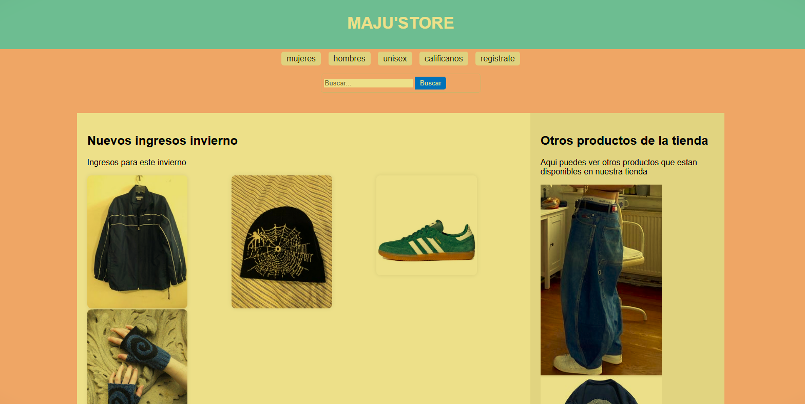
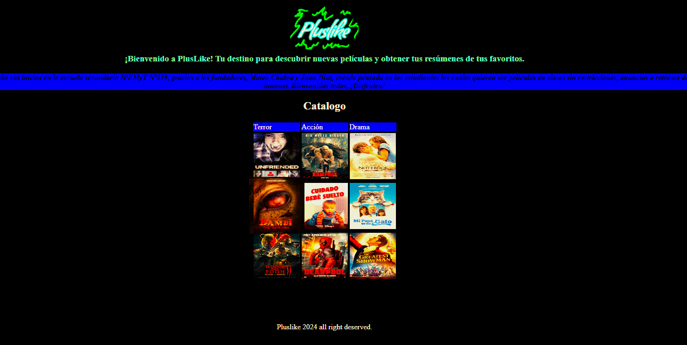
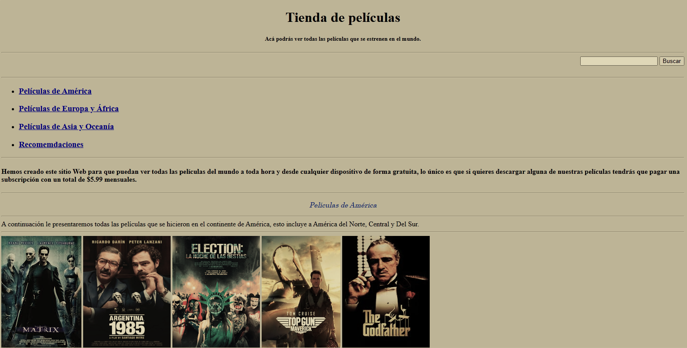

Portfolio Web de sexto año C- Especialidad Informática - IPEMyT Nº 319
Este portafolio web ha sido creado con el propósito mostrar todo lo visto en clases, dejando en evidencia lo aprendido durante el primer trimestre en laboratorio de programación del colegio IpemyT Nº 319, y a la vez, el portafolio web puede ser utilizado en las diferentes asignaturas y por otros cursos del colegio, con el fin de desarrollar una enseñanza de calidad y de una manera diferente y dinámica. Los invitamos a visitar el sitio.
Proyectos de los estudiantes
|  |  |  |
| Venta de Ropa Deportiva | Sitio de Películas y Series | Sitio de Cine de América y el Mundo |
| En la construcción de este sitio los alumnos pudieron integrar Html, CSS y JavaScript. | En este sitio comprendieron la estructura HTML y CSS para que la página sea funcional e incorporar estios modernos de diseño. | Está página posee distintos enlaces y vínculos tanto fuera como dentro de la página principal, tambíen estilos para luego agregar interacción y dinamismo. |
Proposito y Fundamentación
La programación y la robótica son dos de los campos que experimentaron mayor auge en la última década. Se las considera de vital importancia para el desarrollo económico y social de una nación ya que permea casi todos los campos laborales. Desde el ministerio de educación argentino se establecieron los primeros lineamientos para desarrollar una enseñanza orientada a enseñar estos saberes que resulten de utilidad para la vida adulta y particularmente para el mundo del trabajo.
Desarrollar una enseñanza que adentre a los alumnos en las ciencias de la computación y la programación para que el alumno desarrolle habilidades del siglo XXI: el pensamiento computacional, la resolución de problemas, la creatividad, la colaboración y la comunicación, habilidades fundamentales para el éxito en una variedad de campos laborales y académicos. Enseñar programación promueve la comprensión del funcionamiento de la tecnología lo cual ayuda a los estudiantes a ser consumidores más informados y críticos de la tecnología en la sociedad moderna. La programación también puede servir como puerta de entrada al estudio posterior de materias STEM (ciencia, tecnología, ingeniería y matemáticas) y, también a trabajos y carreras en campos relacionados.